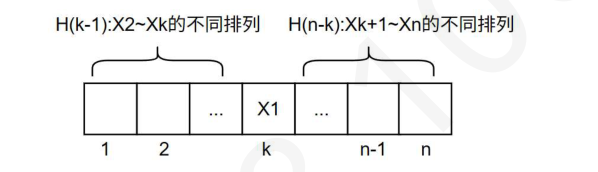
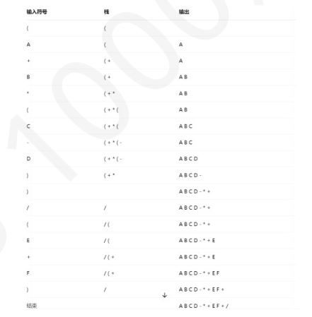
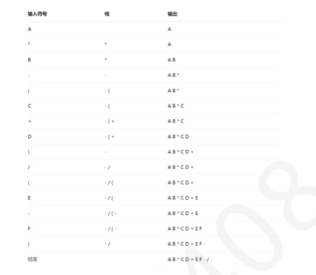
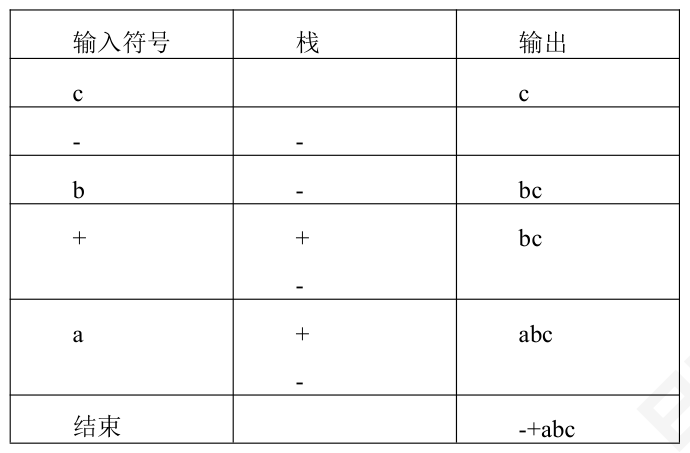

第 1 题
最适合用做链式队列的链表是（ ）
A． 带队首指针和队尾指针的循环单链表 B． 带队首指针和队尾指针的非循环单链表 C． 只带队首指针的非循环单链表 D． 只带队首指针的循环单链表 答案与解析 答案：B
对于链队，进队操作是在队尾插入节点，出队操作是删除队首节点。对于带队首指针f和队尾指针r的非循环单链表，这两种操作的时间复杂度均为0(1)，所以本题答案为B。
教材第 12 页 第 2 题
有一个空栈，栈顶指针指向栈顶元素（每个元素占一个存储单元），当前栈顶指针为1006H，入栈方向为指针增大的方向。执行Push、Push、Push、Push、Pop、Push、Pop、Push 操作后，栈顶指针的值为（）。
A． 1008H B． 1009H C． 1010H D． 100AH 答案与解析 答案：D
根据题意，push 后，栈顶指针+1，泼皮后指针-1，而push 操作6 次，pop 操作2次，相差4 次，所以操作完成后，指针净增+4，由于是16 进制，结果指针为100AH，答案选D。
教材第 12 页 第 3 题
用字母“I”表示入栈，“O”表示出栈，对于入栈序列为“1234”，入栈出栈可交叉进行，得到出栈序列为“2431”的操作序列为（ ）
A． IIOIOIOO B． IIOIIOOO C． IIIOOOIO D． IOIIOIOO 答案与解析 答案：B
A 选项得到的出栈序列是“2341”，C 选项得到的是“3214”，D 选项得到的是 “1342”。
教材第 12 页 第 4 题
有一个非空栈S，栈顶指针sp 指向栈顶元素（每个元素大小占一个存储单元），入栈方向是地址增大的方向，设入栈元素是x，那么入栈操作是（ ）
A． S[sp ++ ] = x; B． S[ ++ sp] = x; C． S[sp -- ] = x; D． S[ -- sp] = x; 答案与解析 答案：B
sp 指向栈顶元素，栈往高地址增长，所以要入栈需使sp 先加1，指向空的位置在进行插入。符合逻辑的是B。如果sp 指向栈顶元素的下一个空闲位置，那么答案就是A。此外，如果给出空栈的栈顶指针是-1，等价于栈顶指针指向栈顶元素。初始为0，等价指向栈顶元素的下一个空闲位置。
教材第 12 页 第 5 题
若元素“1，2，...，n”依次进入初始为空的栈中，元素入栈后可停留可出栈，直到所有的元素都出栈，若第k（1≤k≤n）个出栈元素是“1”，那么第k+1 个出栈元素的可能取值有（ ）种
A． k B． n - k C． n - 1 D． k + 1 答案与解析 答案：B
第k 个出栈元素是“1”，那么前面k 个元素一定是1~k，也就是1~k-1 个位置包括2~k 一共k-1 个元素，否则元素超过k 个，栈底的“1”在位置k 一定出不来。剩余的k+1~n 一共n-k个元素进行入栈和出栈，k+1 个位置的不同元素可能个数也就变成了，k+1~n 依次入栈，第一个出栈的元素可能个数，易知任何一个都可能在第一个出栈，都有其对应的合法操作，答案选B。
教材第 12 页 第 6 题
一个栈的入栈序列是1,2,3, . . . , 𝑛，则出栈序列𝑃1 , 𝑃2 , 𝑃3 , ⋯, 𝑃𝑛 中，元素1 的可能位置有多少个 （）
A． 1 B． n-1 C． n D． n/2 答案与解析 答案：C
容易推得当𝑃𝑖 = 1 时，入栈顺序可以是i, i-1, ..., 1；然后，依次从栈顶出栈。这样可以推得1 能够在任意位置。反过来思考这道题，当𝑃𝑖 = 1 时，𝑃1 , 𝑃2 , . . . , 𝑃𝑖−1 的所有可能，一定是由2，3，...，i-1，i 共计i-1个元素构成的不同的出栈序列状态，i 的位置右边刚好是i+1, i+2, ..., n 共n-i-2 个元素构成的不同出栈序列个数，那我们设n 个元素的出栈序列个数为H(n)。当1 在i=1 的位置上时，左边0 个元素，右边2~n 共n-1 个元素，出栈序列有H(0)*H(n-1) 当1 在i=2 的位置上时，左边一定是2，共1 个元素，右边3~n 共n-2 个元素，出栈序列有H(1)*H(n-2) ... 当1 在i=n 的位置上时，左边2~n 共n-1 个元素，右边0 个元素，出栈序列有H(n-1)*H(0) 所以n个元素的不同出栈序列个数总数𝐻𝑛= 𝐻0∗𝐻𝑛−1+ 𝐻1∗𝐻𝑛−2+ . . . + 𝐻𝑛− 𝑛𝐶2𝑛1∗𝐻0= 𝑛+1这就是我们的卡特兰数，上述就是他的递推过程。
教材第 12 页 第 7 题
将5 个字母“ooops”按顺序进栈，则有（）种不同的出栈顺序仍然可以得到“ooops”
A． 1 B． 3 C． 5 D． 6 答案与解析 答案：C
本题考查栈的操作。对于进栈序列“ooops”，出栈序列为“ooops”，最后两个字符“ps”相同，说明“ps”在最后“p”入栈出栈再“s”入栈出栈。因此只需要考虑“ooo”得到 “ooo”的不同入栈出栈顺序，因为无论是哪种顺序，只要合法一定得到“ooo”，所以问题转化为3 个元素的不同出栈序列。即为n=3 的卡特兰数，答案为5。
教材第 12 页 第 8 题
入栈序列为1234 的出栈序列个数有（ ）个
A． 13 B． 14 C． 15 D． 16 答案与解析 答案：B
此题答案是n=4 的卡特兰数证明方法一：利用卡特兰数的递推式：𝐻𝑛= 𝐻0𝐻𝑛−1+ 𝐻1𝐻𝑛−2+ . . . + 𝐻𝑛− 𝑛𝐶2𝑛1𝐻0= 𝑛+1当元素1 放在出栈序列第k 个位置时，前面k-1 个位置一定是2~k 共计k-1 个元素的出栈排列个数H(k-1)，右边位置是k+1~n 共计n-k 个元素的出栈序列排列个数H(n-k)，由此得到上述递推式。 𝑛𝐶2𝑛𝑛 −𝐶2𝑛𝑛−1 证明方法二：网格法， 𝑛+1 = 𝐶 2𝑛 入栈操作为横坐标，出栈操作为纵坐标，n次入栈+n次出栈操作即从原点出发到(n, n)的路径个𝑛 ，但是每个时刻，出栈次数不能数，即2n 次操作里面选择n 次入栈（剩下的是出栈）的可能数，即𝐶2𝑛 比入栈次数多，否则就是不合法。如下图，我们可以知道，不合法的操作路径，一定会触碰y=x+1 到达(n, n)，而这样的路径经过y=x+1 反射都会到达点（n-1, n+1），所以所有不合法的路径即从原点出发到点(n-1, n+1)的所有路径数量。 𝑛𝑛−1 = 𝐶2𝑛𝑛 −𝐶2𝑛 综合以上，合法操作路径条数=𝐶2𝑛 𝑛+1 （只要触碰到y=x+1 说明当前状态出栈比入栈次数多，非法序列），补充：出栈序列为12...n 的入栈序列个数？逆向思维，根据上述网格法，其实合法序列就是不同的路径的条数，每一条路径的出栈出栈次序有差异，得到的出栈序列也有差异，那么我们固定出栈序列，通过路径还原成入栈序列，肯定也是不同的。所以结果还是卡特兰数。 𝑛𝐶2𝑛

教材第 12 页 第 9 题
一个栈（容量为3）的进栈序列为1,2,3,4，那么有（）个不同的出栈序列?
A． 15 B． 14 C． 13 D． 12 答案与解析 答案：C
若栈容量为4，则不同出栈序列数为卡特兰数𝑛+1 ， n=4 时经计算为 14 。但题目容 量限制为3，则仅4,3,2,1出栈序列需要栈的容量为4，无法实现，故不同的出栈序列数量为14- 1=13。
教材第 12 页 第 10 题
设n 个元素进栈序列是P1,P2,...,Pn，其输出序列是1,2,..n，若Pn=1，则Pi(1≤i≤n-1)的值是（ ）
A． n-i+1 B． n-i C． i D． 有多种可能 答案与解析 答案：A
当Pn=1 时，进栈序列是P1, P2, P3, …, 1，由输出序列可知，P1, P2, P3, …, Pn 依次进栈，然后依次出栈，即P(n-1)=2, P(n-2)=3, …, P1=n，也就是说Pi=n - i + 1。所以本题答案为A。
教材第 13 页 第 11 题
若一个栈的入栈顺序为1, 2, 3, 4, 5，则不能得到的出栈顺序为（ ）
A． 4，3，2，1，5 B． 3，2，5，1，4 C． 4，5，3，2，1 D． 3，4，2，5，1 答案与解析 答案：B
可以模拟各个选项，对于B，必须先将1.2.3入栈，然后先后出栈3.2，栈中剩1，下一个出栈元素为5，所以需要将4.5先后入栈，此时栈中元素有1, 4, 5，出栈5，栈内元素有1，4，下一个出栈元素为4，但是选项中是1，所以无法实现，故选B。
教材第 13 页 第 12 题
元素a，b，c，d，e 依次进入初始为空的栈中，若元素进栈后可停留、可出栈，直到所有元素都出栈，则在所有可能的出栈序列中，以元素d 开头的序列个数是（ ）。
A． 3 B． 4 C． 5 D． 6 答案与解析 答案：B
本题要求出栈序列以d 开头，则a，b，c，d4 个元素需要依次进行入栈操作，然后d 出栈，栈中元素还剩a，b，c，且a，b，c 三个元素的出栈序列固定为c，b，a，所以只有e 元素的出栈序列位置没有固定，即可以在d 出栈后、e 进栈后直接出栈，出栈序列为d，e，b，a，c；也可以在d 出栈后，c 出栈，e 再进栈后直接出栈，出栈序列为d，c，e，b，a；同理可得e 元素可以在b 或a 出栈之后再进行入栈和出栈操作，所以本题以元素d 开头的序列个数是4。
教材第 13 页 第 13 题
采用共享栈的好处是（ ）。
A． 减少存取时间，降低发生上溢的可能 B． 节省存储空间，降低发生上溢的可能 C． 减少存取时间，降低发生下溢的可能 D． 节省存储空间，降低发生下溢的可能 答案与解析 答案：B
上溢是指存储器满，还往里写；下溢是指存储器空，还往外读。为了解决上溢，可给栈分配很大的存储空间，但这样又会造成存储空间的浪费。共享栈的提出就是为了在解决上溢的基础上节省存储空间，将两个栈放在同一段更大的存储空间内，这样，当一个栈的元素增加时，可使用另一个栈的空闲空间，从而降低发生上溢的可能性。
教材第 13 页 第 14 题
设有一个顺序共享栈share[0:n-1]，其中第一个栈顶指针top1 的初值为-1，第二个栈顶指针top2 的初值为n，则判断共享栈满的条件是（ ）。
A． top2-top1 == 1 B． top1-top2 == 1 C． top1==top2 D． top1-top2 == 2 答案与解析 答案：A
可举例子自行模拟。读者可以思考若top1的初值为0，top2的初值为n-1时栈满的条件。注意：栈顶、队头与队尾的指针的定义是不唯一的，做题时务必仔细审题和思考
教材第 13 页 第 15 题
中缀表达式A * (B+C)/(D-E+F)的后缀表达式是（ ）
A． A*B+C/D-E+F B． ABC+ * DE-F+/ C． AB * C+D/E-F+ D． ABCDEF*+/-+ 答案与解析 答案：B
通过一个运算符栈将中缀表达式转换为后缀表达式。本题答案为B。
教材第 13 页 第 16 题
若A=10、B=4、C=6、D=4、E=15 则后缀表达式“AB*CD+-E+”的值为（ ）
A． 45 B． 31 C． 53 D． 65 答案与解析 答案：A
AB*CD+-E+--->(AB*CD+-)+E--->(AB*-(C+D))+E--->(A*B-(C+D))+E---> 40-(6+4)-(-15) = 45。
教材第 13 页 第 17 题
已知后缀表达式4 5 2 * + 2 / 5 2 - * 3 @ 8 * 的结果是56，则@处应该是什么操作符？
A． +； B． -； C． *； D． ÷； 答案与解析 答案：D
@左边计算结果为[4+(5*2)]/2*(5-2)@3 = 21@3*8，所以21@ 3 为7，所以@为÷
教材第 13 页 第 18 题
利用栈求表达式的值时，设立运算数栈OPEN。假设OPEN 只有两个存储单元，则在下列表达式中，不会发生溢出的是（）
A． A-B * (C-D) B． (A-B) * C-D C． (A-B * C)-D D． (A-B) * (C-D) 答案与解析 答案：B
利用栈求表达式的值时，可以分别设立运算符栈和运算数栈，其原理不变。选项B 中A 入栈，B入栈，计算得R1，C 入栈，计算得R2，D 入栈，计算得R3，由此得深为2。A、C、 D 依次计算得栈深为4、3、3。因此选B。
教材第 13 页 第 19 题
中缀表达式转换成后缀表达式，用栈来存放还不能确定运算次序的操作符。栈初始为空，下列中缀表达式中，转后缀表达式过程中用到栈空间最大的是（）
A． A + B - C * （D + E）/ F B． ( A + B ) * ( C - D ) / E + F C． A * B - ( C + D ) / ( E - F ) D． ( A + B * ( C - D ) ) / ( E + F) 答案与解析 答案：D
A + B - C *（D + E）/ F ( A + B ) * ( C - D ) / E + F ( A + B * ( C - D ) ) / ( E + F) A * B - ( C + D ) / ( E - F )


教材第 13 页 第 20 题
中缀表达式a+b-c 的前缀表达式为（ ）
A． ab+c- B． +-abc C． -+abc D． +a-bc 答案与解析 答案：C
我们要知道一个原则，在中缀表达式里面，操作符的优先级在同级情况下，左边的比右边的优先级高，而前缀用栈模拟过程中： • 操作数直接输出（从右往左输出） • 右括号直接入栈 • 其他运算符入栈前，要比较和栈顶运算符的优先级，只有比栈顶优先级大，才入栈，否则出栈到栈顶运算符优先级比当前小，或者栈空为止，再入栈当前操作符。 • 若是左括号，那就出栈到对应右括号为止。

教材第 13 页 第 21 题
a * ( b + c ) - d 的前缀表达式是（ ）
A． a b c d * + - B． a b c + * d - C． - * a + b c d D． - + * a b c d 答案与解析 答案：C
【方法一】括号法按运算顺序添加括号：((a * ( b + c )) - d)，按计算顺序依次把括号内的运算符提到括号外，再去掉括号
教材第 13 页 第 22 题
以下关于栈和队列应用场景的描述，哪一个是正确的?（ ）
A． 在实现函数调用和递归过程中，通常使用队列来存储局部变量和返回地址 B． 在实现图的广度优先搜索（BFS）算法时，通常使用栈作为辅助数据结构 C． 在实现括号匹配问题时，通常使用队列作为辅助数据结构 D． 在实现图的深度优先搜索（DFS）算法时，通常使用栈作为辅助数据结构 答案与解析 答案：D
A 错误，在实现函数调用和递归过程中，通常使用栈来存储局部变量和返回地址；B 错误，BFS 中用队列作为辅助数据结构；C 错误，括号匹配通常采用栈作为辅助数据结构
教材第 13 页 第 23 题
用不带头结点的单链表存储队列时，其队头指针指向队头结点，其队尾指针指向队尾结点，则在进行删除操作时（）
A． 仅修改队头指针 B． 仅修改队尾指针 C． 队头和队尾指针都要修改 D． 队头和队尾指针都可能要修改 答案与解析 答案：D
删除操作虽然发生在队头，但是若当前队列只有一个数据元素时，则队头也是队尾。考虑到这种特殊情况，删除操作也会带来队尾的改变。
教材第 14 页 第 24 题
某带链的队列初始状态为front=rear=NULL。经过一系列正常的入队与退队操作后，front=rear。该队列中的元素个数为（）
A． 1 B． 0 C． 1 或0 D． 不确定 答案与解析 答案：C
初始状态为front=rear=NULL说明是不带头结点的链队列：入队列，rear+1， front 不变；出队列，front+1，rear 不变（第一次入队列除外，rear+1，front+1）。因为不带头结点的队列，第一个元素入队时需要特别处理，所以只有当队列为空时，或者只有一个元素时，rear 才会等于front。
教材第 14 页 第 25 题
假设用Q[0..M]实现环形队列，f 作为队头指针指向队头元素的前一个位置，r 作为队尾指针指向队尾元素。若用(r+1)%(M+1) == f 作为队满的标志，则（ ）
A． 可用f== r 作为队空的标志 B． 可用f > r 作为队空的标志 C． 可用(f+1) % (M+1) == r 作为队空的标志 D． 队列中最多可以有M+1 个元素 答案与解析 答案：A
注意题目中这里Queue MaxSize 等于M+1。题目里f 作为队头指针指向队头元素的前一个位置，r 作为队尾指针指向队尾元素，用(r+1)%(M+1)==f 作为队满的标志，说明牺牲一个单元来区分队空和队满，队列中最多可以有M 个元素，注意王道书79 页（循环队列那里）的是f 作为队头指针指向队头元素，r 作为队尾指针指向队尾元素的后一个位置（下一次要插入元素的位置），但判空判满的条件本质还是不变的。
教材第 14 页 第 26 题
循环队列放在一维数组A[0..M-1] 中，front 指向队头元素，rear 指向队尾元素的后一个位置，队列中最多能容纳M-1 个元素，若当前队列有k 个元素（0<k<M-1），则下列关于入队操作（元素值为value）和出队操作（保存到q 中），正确的是（ ）
A． 入队操作：A[ ++ rear] = value; 出队操作：q = A[front ++ ]； B． 入队操作：A[rear ++ ] = value; 出队操作：q = A[front ++ ]； C． 入队操作：rear = (rear + 1) % M; A[rear] = value;出队操作：q = A[front]；front = (front + 1) % M; D． 入队操作：A[rear] = value; rear = (rear + 1) % M; 出队操作：q = A[front]；front = (front + 1) % M; 答案与解析 答案：D
front 指向队头，说明front 的位置就是出队元素的位置，所以应该是先出队，再front 自增。rear 指向队尾元素的下一个位置，说明这个位置是空的也就是下一个要入队元素的位置，所以是先入队，再rear 自增。由于是循环队列，所以自增后都要取模，因此答案选D。这道题改编自真题，真题问的是判空盘满的条件，大家可以不看选项的情况下自己写出来队空：front == rear;队满：front == (rear + 1) mod M其次，要是改成rear 指向队尾元素位置，大家也要会自己分析。
教材第 14 页 第 27 题
循环队列放在一维数组A[0..M-1] 中，end1 指向队头元素，end2 指向队尾元素。假设队列两端均可进行入队和出队操作，队列中最多能容纳M-1 个元素。初始时为空。下列判断队空和队满的条件中，正确的是（）。
A． 队空：end1== end2; 队满：end1 == end2; B． 队空：end1== (end2 + 1) mod M; 队满：end1 == (end2 + 1) mod (M - 1) C． 队空：end1 == (end2 + 1) mod M; 队满：end1 == (end2 + 2) mod M D． 队空：end1 == end2; 队满：end2 == (end1 + 1) mod M 答案与解析 答案：C
模M-1 的范围是[0，m-2]，会导致数组下标为m-1 的结果缺失，所以必须模M，直接排除B。队列为空时，当end1 指向队头元素，end2 指向队尾元素时，rear 在front 前面一格，由于要牺牲一个位置区分循环队列判空判满，所以队满时end2 和end1 相差2，因此答案按选C。
教材第 14 页 第 28 题
循环队列放在一维数组A[0,...,M-1]中，front 指向队头元素，rear 指向队尾元素的后一个位置。数组大小不可扩展，并且不考虑额外开销的情况下，该队列的剩余可用空间为（）
A． M- (rear - front) B． M- (rear - front) % (M - 1) C． M- (rear - front + M) % M D． M - 1 - (rear - front + M) % M 答案与解析 答案：D
循环队列由固定大小M 的数组A 实现，队列必须空出一个单元来区别队空和队满的判断。也可以用其他方法，但是都需要标志信息的额外开销，比如用count 来记录队列元素个数，使用标记位（入队置true，出队置false，若rear 和front 无法区分队满还是队空，用标记位true 表示满，false 表示空）等，但都需要额外的开销，所以必须牺牲一个队列空间，故队满情况下元素个数为M-1。(rear - front) % M 为当前队列的元素个数，因此答案选D。
教材第 14 页 第 29 题
若用一个大小为6 的数组来实现环形队列，rear 作为队尾指针指向队列中尾部元素，front 作为队头指针指向队头元素的前一个位置。当前rear 和front 的值分别是0 和3，当从队列中删除一个元素，再加入两个元素后，rear 和front 的值分别是（ ）
A． 1 和5 B． 2 和4 C． 4 和2 D． 5 和1 答案与解析 答案：B
删除一个元素时front 循环增1，加入两个元素时rear 循环增2。本题答案为B。
教材第 14 页 第 30 题
若循环队列使用数组A[0...m-1]存放数据元素，已知头指针front 指向队首元素，尾指针rear 指向队尾元素后的空单元，则当前队列中的元素个数为（）。
A． (rear-front+m) % m B． rear - front + 1 C． rear -front D． rear-front-1 答案与解析 答案：A
因为是循环队列，所以rear 可能会从m-1 回到0，导致比front 小，所以要采取取模来计算元素个数，答案选A。这类题目可以举例来快速得出答案。
教材第 15 页